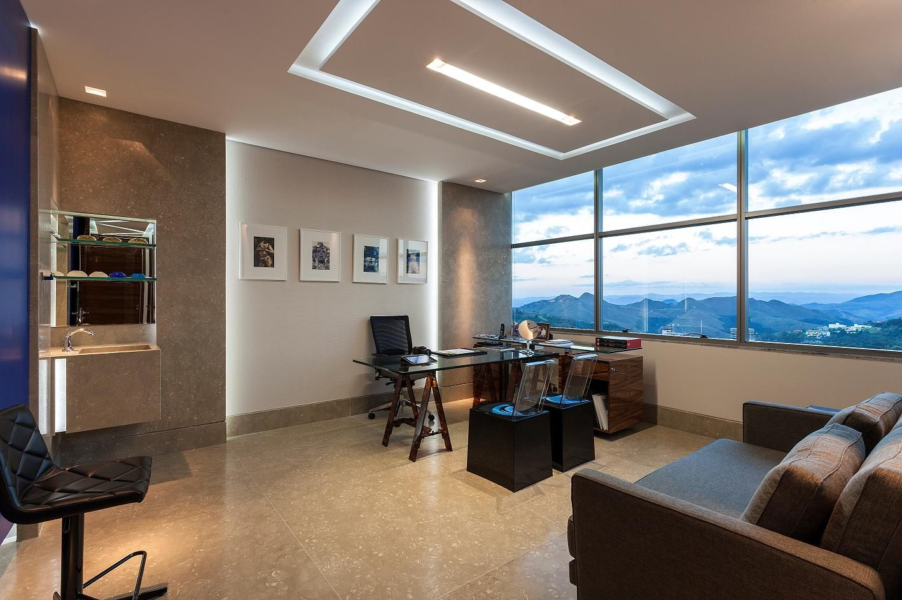

Atendimento agil para seu negócio
Programa em JS para seu consultorio
Sair da sala de atendimento, ir até a recepção e chamar o paciente, um processo relativamente rápido.
Repita isso diariamente, ou então em casos de multiplos atendimentos com o mesmo paciente repita esse processo várias vezes,
seja em um atendimento em consultório, clínica ou guiche de algum comércio, pois é, só de imaginar já ficamos cansados...
E se você pudesse instalar um programa onde deixa um monitor em sua recepção e o monitor renderiza em sua tela e chama dos pacientes
em um único click, BEM MELHOR!
criamos este script a fim de demonstrar que é possível, adicionar opções para adicionar o cliente à lista de espera
adicionar alguém como atendimento urgente, e uma opção para chamar os pacientes em sua devida ordem.
Não é de escopo desse exemplo criar uma interface extremamente detalhada, mas demonstar a usualidade de uma tela de recepção
para controle de atendimentos em ordem, seria possível ainda adicionar uma opção de direcionamento
como por exemplo
Paciente X: dirija-se ao guiche 9!
no momento vamos nos ater a praticidade técnica de um unico canal de atendimento a titulo de demonstração.
Bem-Vindo a clínica Àgil
Observe o programa e faça testes
Consultório em atendimento
Insira os nomes dos pacientes para serem atendidos seguindo os seguintes critérios.
Nome do paciente + adicionar (insere o paciente na lista)
Nome do paciente + urgência (faz o paciente pular a fila e ser atendido com urgencia
para começar a atender clique em atender, e atenda os pacientes na ordem da lista.
Paciente:
Em Atendimento:

Quanto a usabilidade deste script é bem intuitiva, para empresas onde é necessário atender os pacientes ou clientes por ordem de chegada.
O script em questão ajudará a criar telas em uma recepção que renderize a ordem dos clientes a serem atendidos
útil para chamar clientes à um guiche ou a uma sala de atendimento, facilitando assim o dia a dia da equipe de atendimento e agizilando os trabalhos.